library(bayesiansurpriser)
#> bayesiansurpriser: Bayesian Surprise for De-Biasing Thematic Maps
#> Inspired by Correll & Heer (2017) - IEEE InfoVis
library(sf)
#> Warning: package 'sf' was built under R version 4.5.2
#> Linking to GEOS 3.13.0, GDAL 3.8.5, PROJ 9.5.1; sf_use_s2() is TRUE
library(ggplot2)
#> Warning: package 'ggplot2' was built under R version 4.5.2Overview
The bayesiansurpriser package provides seamless ggplot2
integration through custom scales and computed surprise values that can
be mapped to aesthetics.
Loading Example Data
nc <- st_read(system.file("shape/nc.shp", package = "sf"), quiet = TRUE)Basic Workflow: Compute then Plot
The recommended workflow is to compute surprise first, then use ggplot2:
# Compute surprise
result <- surprise(nc, observed = SID74, expected = BIR74)
# Plot with ggplot2 using geom_sf
ggplot(result) +
geom_sf(aes(fill = surprise)) +
scale_fill_surprise() +
labs(title = "Bayesian Surprise Map")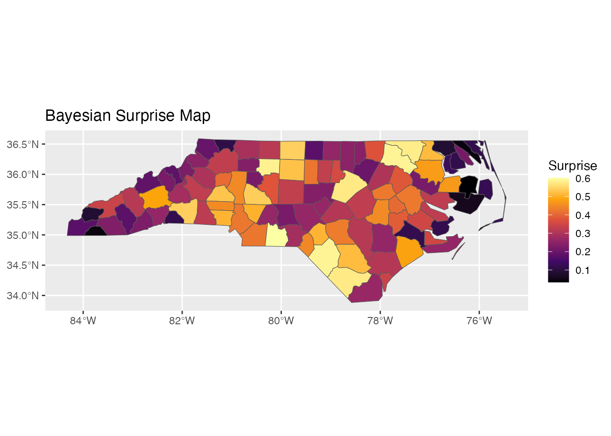
Color Scales
Sequential Scale: scale_fill_surprise()
For absolute surprise values (always positive):
ggplot(result) +
geom_sf(aes(fill = surprise)) +
scale_fill_surprise(option = "inferno") +
labs(title = "Inferno Palette")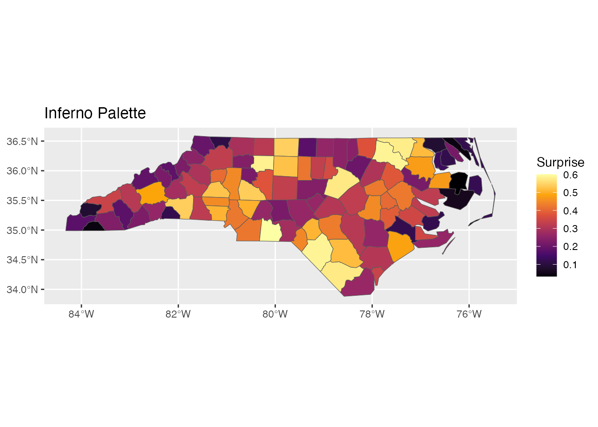
Available viridis options: “viridis”, “magma”, “plasma”, “inferno”, “cividis”, “rocket”, “mako”, “turbo”
p1 <- ggplot(result) +
geom_sf(aes(fill = surprise)) +
scale_fill_surprise(option = "viridis") +
labs(title = "Viridis")
p2 <- ggplot(result) +
geom_sf(aes(fill = surprise)) +
scale_fill_surprise(option = "plasma") +
labs(title = "Plasma")
p1
p2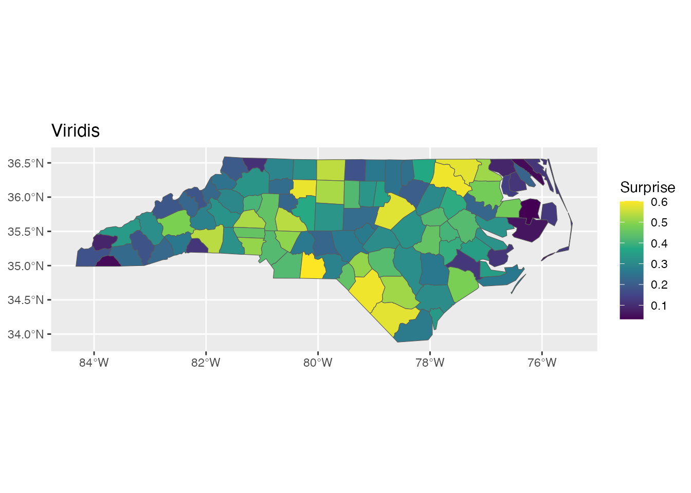
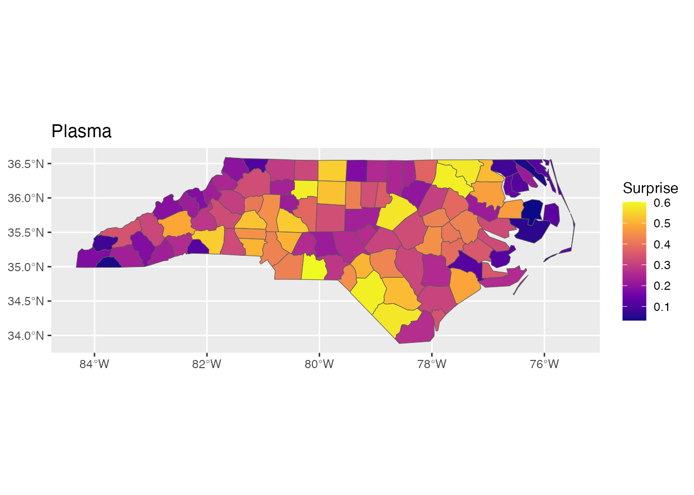
Diverging Scale: scale_fill_surprise_diverging()
For signed surprise (positive = over-representation, negative = under-representation):
ggplot(result) +
geom_sf(aes(fill = signed_surprise)) +
scale_fill_surprise_diverging() +
labs(title = "Diverging Scale for Signed Surprise")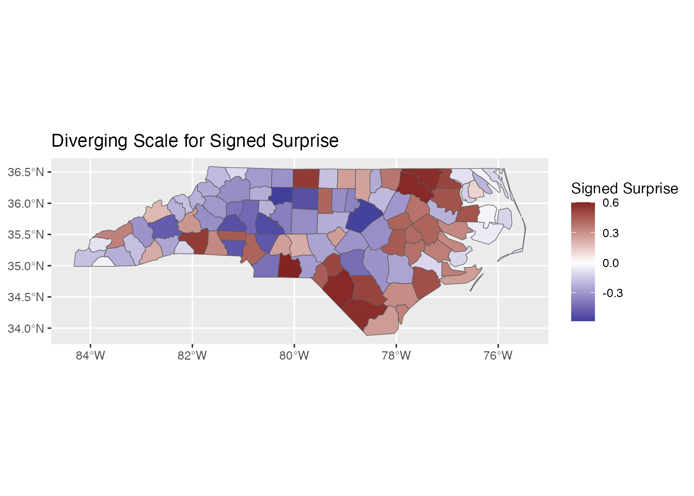
Custom colors:
ggplot(result) +
geom_sf(aes(fill = signed_surprise)) +
scale_fill_surprise_diverging(
low = "#2166AC", # Blue
mid = "#F7F7F7", # Light gray
high = "#B2182B" # Red
) +
labs(title = "Custom Diverging Colors")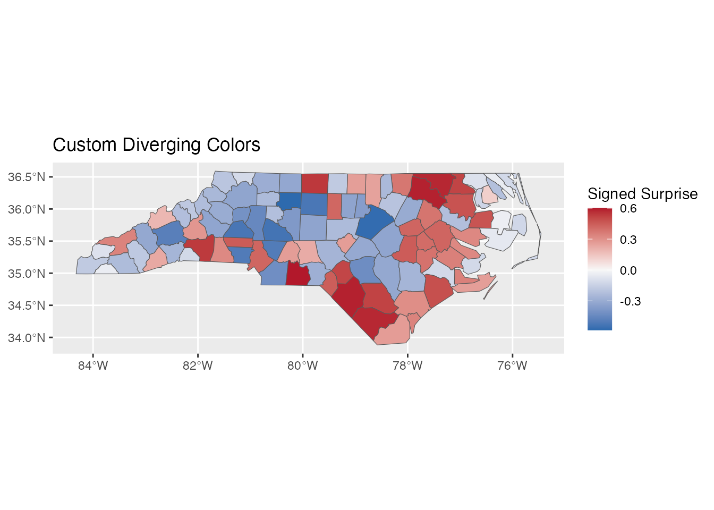
Binned Scale: scale_fill_surprise_binned()
For discrete categories:
ggplot(result) +
geom_sf(aes(fill = surprise)) +
scale_fill_surprise_binned(n.breaks = 5) +
labs(title = "Binned Surprise Scale")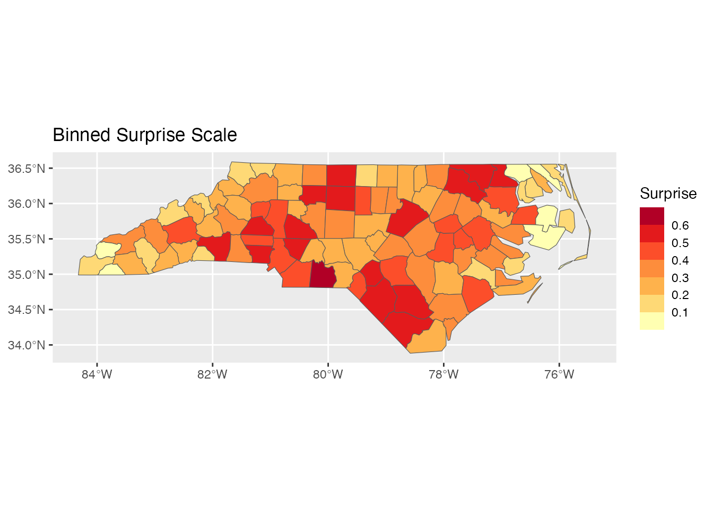
Combining with Other ggplot2 Elements
Adding Labels
# Top 5 most surprising counties
top5 <- result[order(-result$surprise), ][1:5, ]
ggplot(result) +
geom_sf(aes(fill = surprise)) +
geom_sf_text(data = top5, aes(label = NAME), size = 3) +
scale_fill_surprise() +
labs(title = "Top 5 Most Surprising Counties Labeled")
#> Warning in st_point_on_surface.sfc(sf::st_zm(x)): st_point_on_surface may not
#> give correct results for longitude/latitude data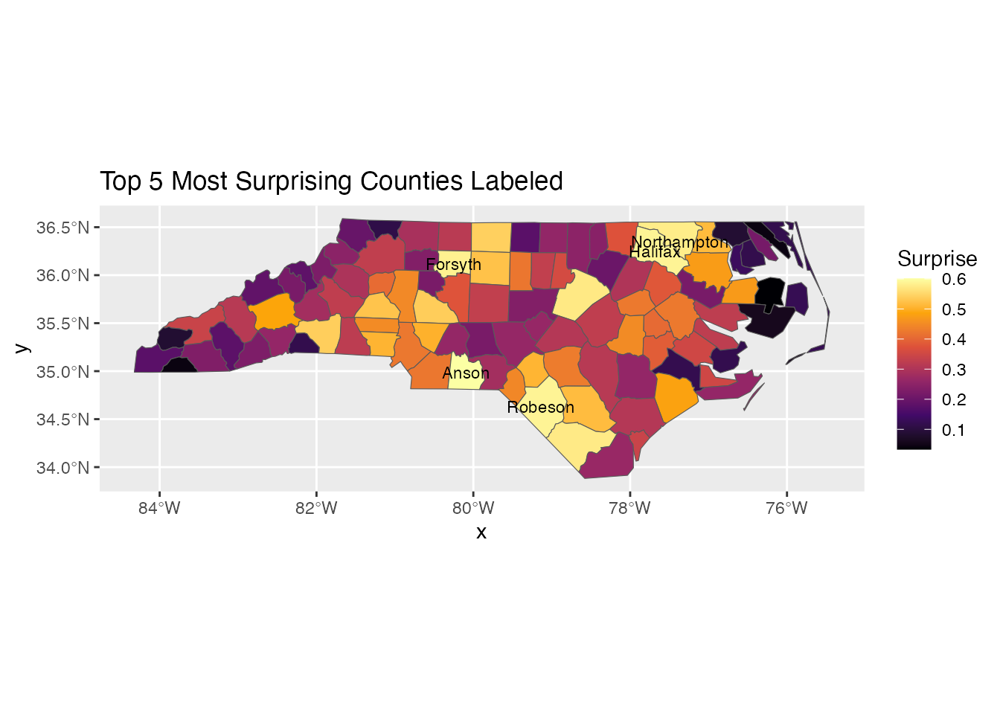
Faceting
# Compare two time periods
result74 <- surprise(nc, observed = SID74, expected = BIR74)
result79 <- surprise(nc, observed = SID79, expected = BIR79)
result74$period <- "1974-78"
result79$period <- "1979-84"
combined <- rbind(result74, result79)
ggplot(combined) +
geom_sf(aes(fill = surprise)) +
scale_fill_surprise() +
facet_wrap(~period) +
labs(title = "Surprise by Time Period")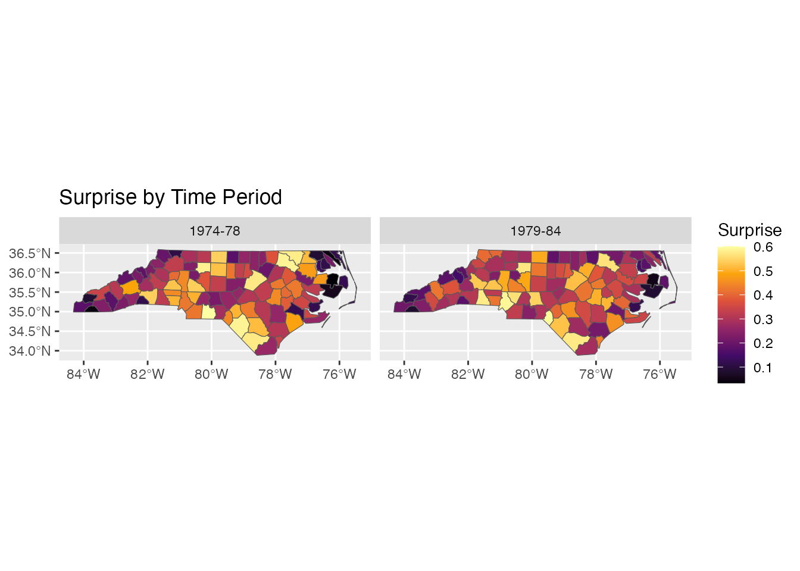
Theme Customization
ggplot(result) +
geom_sf(aes(fill = surprise)) +
scale_fill_surprise(name = "Surprise\n(bits)") +
labs(
title = "Bayesian Surprise: NC SIDS Data",
subtitle = "Identifying unexpectedly high/low SIDS rates",
caption = "Data: NC SIDS 1974-78"
) +
theme_minimal() +
theme(
legend.position = "bottom",
legend.key.width = unit(2, "cm")
)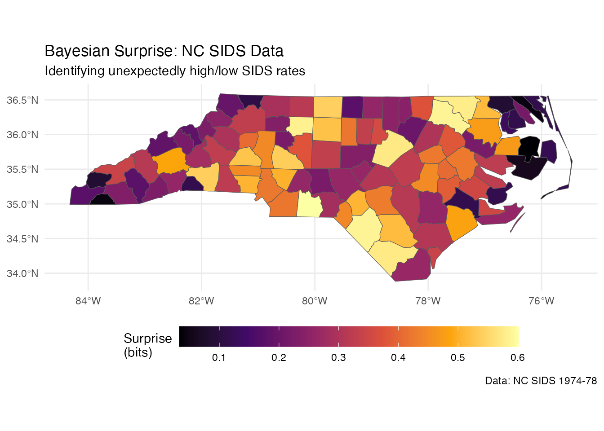
Non-Spatial Data
For non-spatial data, use standard ggplot2 geoms after computing surprise:
# Create example data
df <- data.frame(
region = LETTERS[1:10],
observed = c(50, 120, 80, 200, 45, 150, 90, 180, 60, 110),
expected = c(100, 100, 100, 100, 100, 100, 100, 100, 100, 100) * 10
)
result_df <- surprise(df, observed = observed, expected = expected)
ggplot(result_df, aes(x = reorder(region, -surprise), y = surprise)) +
geom_col(aes(fill = surprise)) +
scale_fill_surprise() +
labs(x = "Region", y = "Surprise (bits)",
title = "Surprise by Region") +
theme_minimal()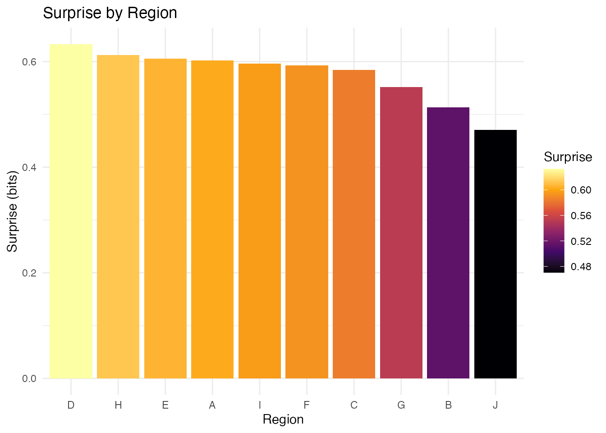
Best Practices
- Use diverging scales for signed surprise: Makes interpretation intuitive
- Consider binned scales for communication: Discrete categories are easier to read
- Label notable regions: Help viewers identify specific areas
- Include a legend title with units: “Surprise (bits)” clarifies the measure
- Use minimal themes for maps: Reduce visual clutter